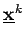
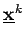
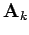

Inhalt Index DeskTop Bronstein

 Optimierung Nichtlineare Optimierung Gradientenverfahren für Probleme mit Ungleichungsrestriktionen Verfahren der projizierten Gradienten
Optimierung Nichtlineare Optimierung Gradientenverfahren für Probleme mit Ungleichungsrestriktionen Verfahren der projizierten Gradienten


Wenn  nicht zulässig ist, wird dieser Vektor zunächst in die Teilmannigfaltigkeit geringster Dimension, auf der  liegt, abgebildet. Ist , dann steht
nicht zulässig ist, wird dieser Vektor zunächst in die Teilmannigfaltigkeit geringster Dimension, auf der  liegt, abgebildet. Ist , dann steht  senkrecht auf dieser Teilmannigfaltigkeit. Gilt nicht , dann wird durch Weglassen einer aktiven Nebenbedingung die Teilmannigfaltigkeit um eine Dimension erweitert, wodurch eintreten kann (s. Abbildung mit Projektion auf eine Seitenfläche).
senkrecht auf dieser Teilmannigfaltigkeit. Gilt nicht , dann wird durch Weglassen einer aktiven Nebenbedingung die Teilmannigfaltigkeit um eine Dimension erweitert, wodurch eintreten kann (s. Abbildung mit Projektion auf eine Seitenfläche).
Da  häufig aus  durch Hinzufügen bzw. Streichen einer Zeile entsteht, kann die aufwendige Berechnung von
durch Hinzufügen bzw. Streichen einer Zeile entsteht, kann die aufwendige Berechnung von  erleichtert werden, indem die Kenntnis von genutzt
erleichtert werden, indem die Kenntnis von genutzt
wird (s. 18.6, 18.10).
| Beispiel |
|
Lösung des Problems vom vorigen Beispiel.
|